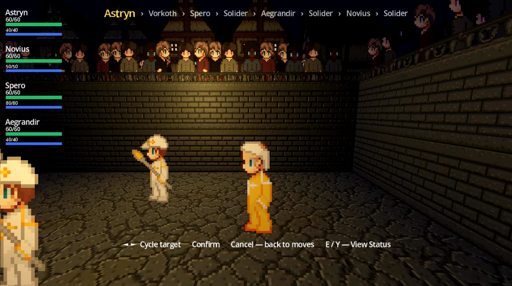
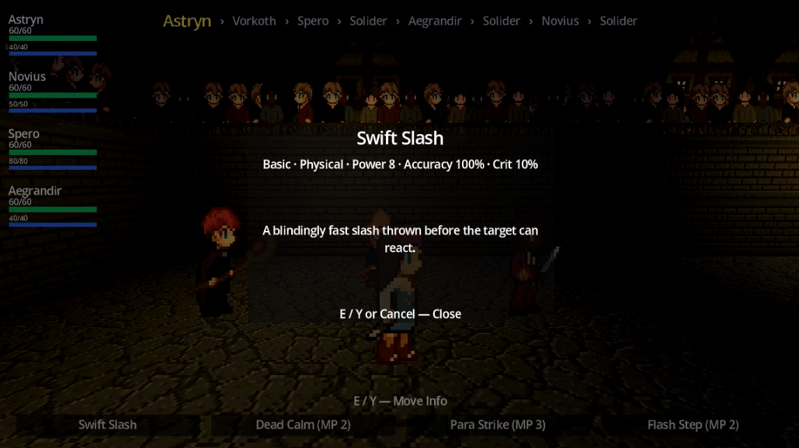
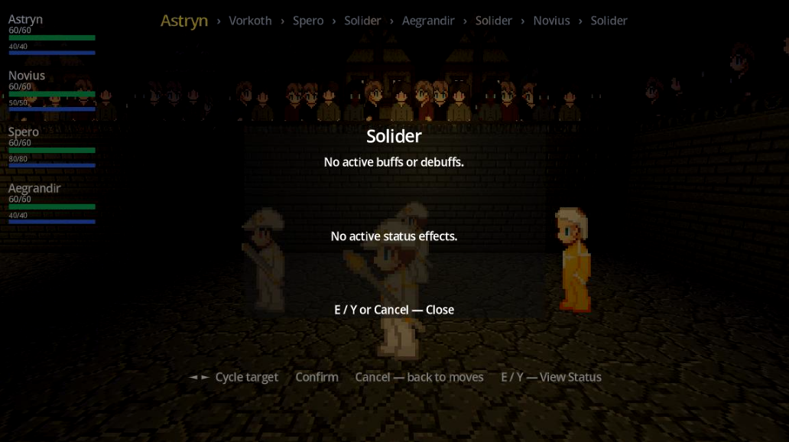
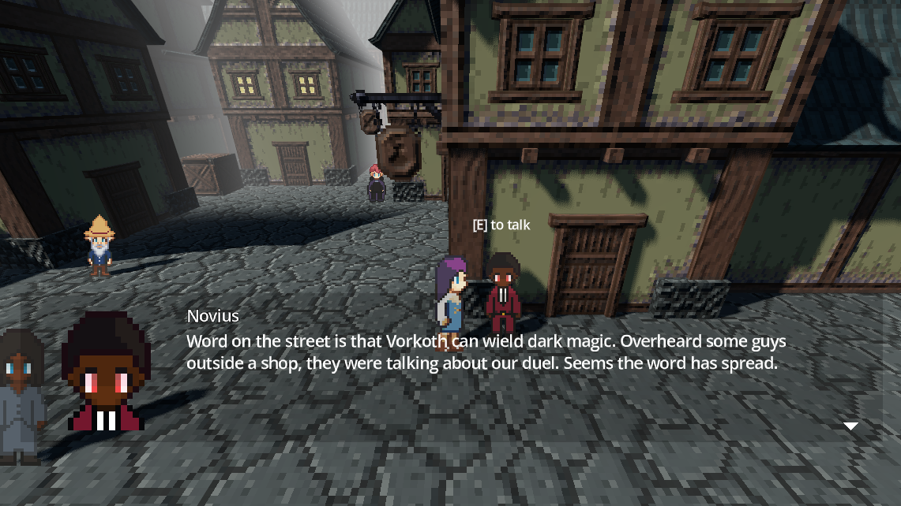
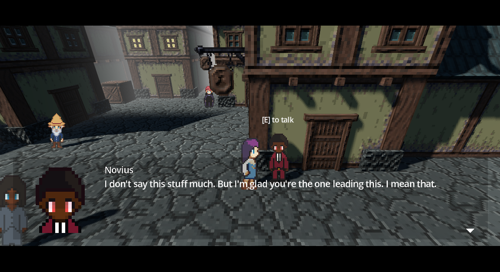
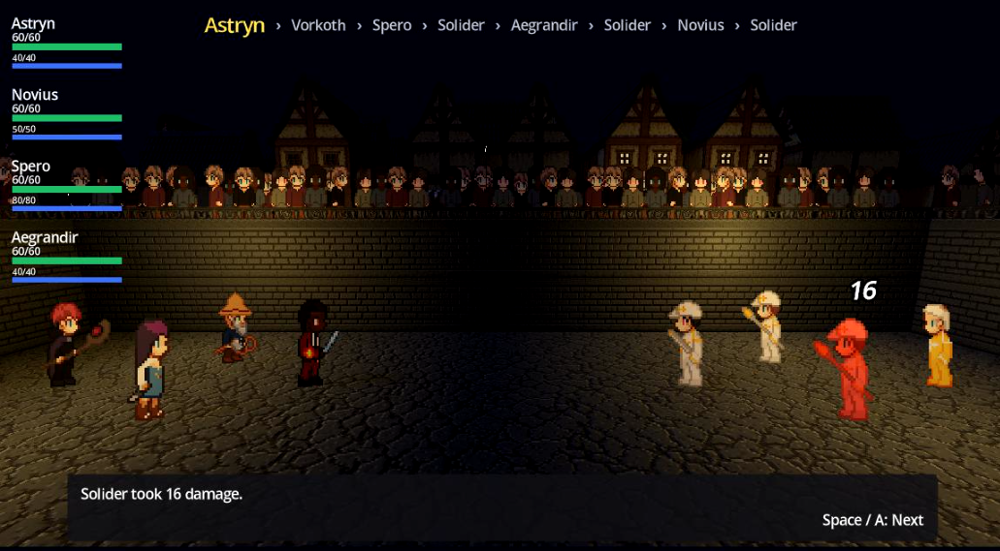

Camera-Driven Targeting

Instead of a sprite arrow or highlight ring, the battle camera itself does the highlighting. It dollies in on whoever's turn it is the moment that turn starts, then reframes again on whoever's selected as you cycle through targets: cycling left or right during targeting pans the camera onto the new target using a fixed offset from their position, so anyone gets framed the same way no matter where they spawn on the field. Camera rotation never changes, only its position eases smoothly toward the target over about half a second. Confirming a target glides the camera back to its authored overview shot rather than cutting instantly, so the framing never feels jarring, while canceling sends it back onto whoever is acting.
Individual encounters can also override that default framing offset per target, so an unusually large boss doesn't end up cropped by the same offset used for a human-sized party member.
Info Popups


Two dedicated popups, each on its own input, let the player pull up more detail without leaving the flow of picking an action. While selecting a move, the info input (E, or Y on a gamepad) brings up the Move Info popup: the move's name, a compact stat line (its type and category, plus power, accuracy, and crit chance for damaging moves, and MP cost for anything that isn't purely physical), a line of secondary effects, such as status chance, heal percentage, stat changes, cured statuses, or a note that it hits every combatant, that only appears when there's actually something to say, and its flavor text description. Closing the popup returns keyboard/gamepad focus to the exact move button that was open when it was opened, so navigating the move list never loses your place.
The character info input (C, or X on a gamepad) opens the Target Info popup instead, either for the acting party member during move selection or for whoever is being targeted. It shows the combatant's name, their type (party members only), every stat stage currently buffed or debuffed (or a note that there are none), and every active status effect with its remaining turns, such as "2 turns left" (or a note that none are active). This lets the player scout a target's current condition, such as whether they're already coated in water or buffed on defense, before committing to a move against them.
Dialogue & Interaction


Talking to someone in the open world starts with the interaction system. Any interactable NPC or object carries an invisible area that registers itself with a global interaction manager the moment the player's body enters it, and unregisters when they leave. Every frame, if the player is standing in one or more of those areas, the manager sorts them by distance and floats an "[E / Gamepad A] to..." prompt above the closest one, with the verb read straight off that specific area, so the prompt always matches what's actually about to happen.
Pressing interact hands off to that area's own interact function, locking out further interaction until it resolves, then unlocking again once any dialogue it kicked off has finished, tracked through Dialogue Manager's own start and end signals. The prompt only exists in free-roam, too: it explicitly hides itself during battle scenes, since party members reuse the same interaction-capable script even inside a fight, and it clears its own state on a scene change so a prompt someone was standing under when a scene swap fired, such as walking straight into a boss fight's trigger, doesn't linger into the next scene.
Conversations and cutscenes run on Dialogue Manager 4, an open-source branching-dialogue plugin for Godot, with a custom balloon built on top of it. A central speaker roster maps each character's key to a display name and portrait, so a dialogue file only ever has to reference a character by key instead of repeating a portrait path everywhere they speak, and multiple characters can share a display name (three different soldiers can all show up as "Soldier") while still resolving their own distinct portraits.
A character who isn't in that roster, such as a boss, falls back to a portrait file resolved by the game's current boss phase if one exists, so a boss's face can change across fight phases without any extra dialogue-authoring work, and simply falls back further to a single default portrait otherwise. The balloon itself is repositioned to sit above the game's cinematic letterbox bars instead of behind them, so dialogue and cutscene framing don't fight each other.
Those letterbox bars are toggleable rather than fixed. Cutscenes and battle interruptions show them by default, but a regular NPC or party member conversation defaults to no bars, with a per-character setting to opt a specific conversation into that more cinematic frame. A .dialogue file can also switch the bars on or off directly partway through a conversation, or just for one section of a longer file, instead of committing to one setting for the whole thing.
Branching is handled by Dialogue Manager's own scripting: a line can read live game state, such as a quest-progress flag, to change what a character says, and player-facing choices route through a response menu that jumps to a different line depending on what's picked. Individual lines can also be tagged to auto-play a voice clip and advance once it finishes, or to auto-advance after a timed delay instead of waiting on player input.
Battle Interface

The battle screen keeps the player informed without crowding the camera. A turn queue display shows who acts next, with the current actor highlighted. Every party member gets a portrait with HP and MP bars and status badges, and the boss gets its own health bar once phase 2 begins. A battle message box queues combat text and waits on an advance prompt, and damage appears as floating numbers with MISS and CRIT! callouts. Short tutorial popups explain HP and MP, type matchups, status moves, and coatings the first time each one matters, once per session.
Controls
- Move: WASD or arrow keys
- Interact: E or Gamepad A
- Confirm: Enter, Space, or Gamepad A
- Cancel: F or Gamepad B
- Cycle targets: Left/Right or A/D
- Move Info: E or Gamepad Y
- Character Info: C or Gamepad X
- Pause: Esc or Gamepad Start
Pause Menu & Objectives
Pausing freezes the game and offers Resume, Controls, Objectives, and Main Menu, plus Quit Battle during practice fights. It isn't available on the main menu. In free roam, an objectives HUD tracks the current goal, from talking to people around the city and trying a practice battle, to talking to the team and finally the guards to start the duel. The duel itself only unlocks after the player has talked to all three teammates, and the HUD tucks itself away whenever the cinematic bars are up.